Jurnal Eropa · Hari 7 dari 16
Hari perpindahan: keluar dari Wina, memutar ke tenggara untuk satu urusan yang sudah lama masuk daftar, lalu membelah Austria ke arah barat menuju pegunungan.
Dan jujur saja: ini memang memutar
Tujuan akhir hari ini adalah Obertraun, jauh di barat daya Austria. Parndorf ada di arah sebaliknya — sekitar 50 kilometer ke tenggara Wina, di provinsi Burgenland, dekat perbatasan Hungaria dan Slowakia. Jadi mampir ke sini bukan "kebetulan lewat", tapi keputusan sadar untuk memutar dulu sebelum menempuh sisa perjalanan.
Alasannya sederhana: Designer Outlet Parndorf adalah outlet terbesar di Austria, dan buat rombongan yang memang berniat belanja, satu lokasi ini menggantikan keliling banyak toko di pusat kota dengan harga penuh.
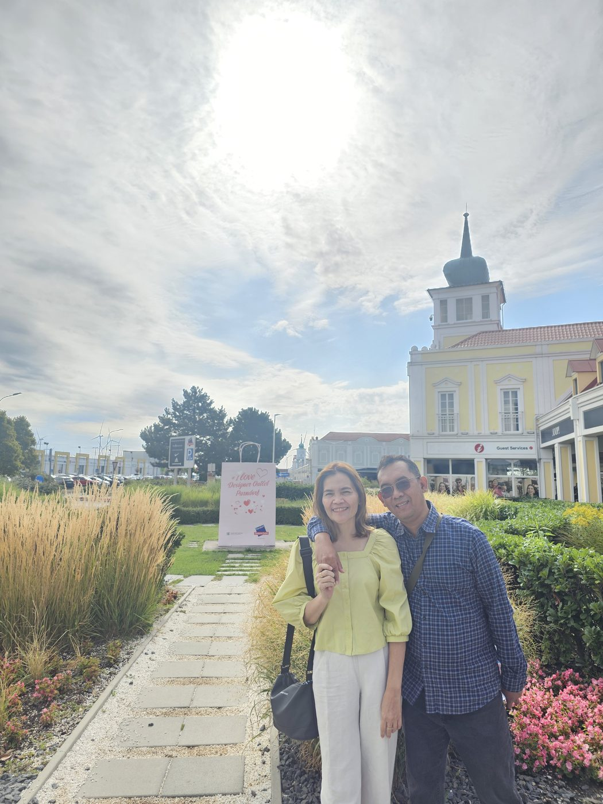
Bukan mal, tapi jalan-jalan terbuka
Yang membedakannya dari mal biasa: tidak ada gedung besar tertutup. Semuanya deretan rumah rendah bergaya Austria — fasad pastel kuning, merah muda, biru muda, dengan atap genting merah, lampu jalan besi cor, dan pot bunga di depan pintu. Tokonya berjajar di sepanjang jalan terbuka, jadi belanja di sini artinya jalan kaki di luar ruangan, bukan berputar di koridor ber-AC.
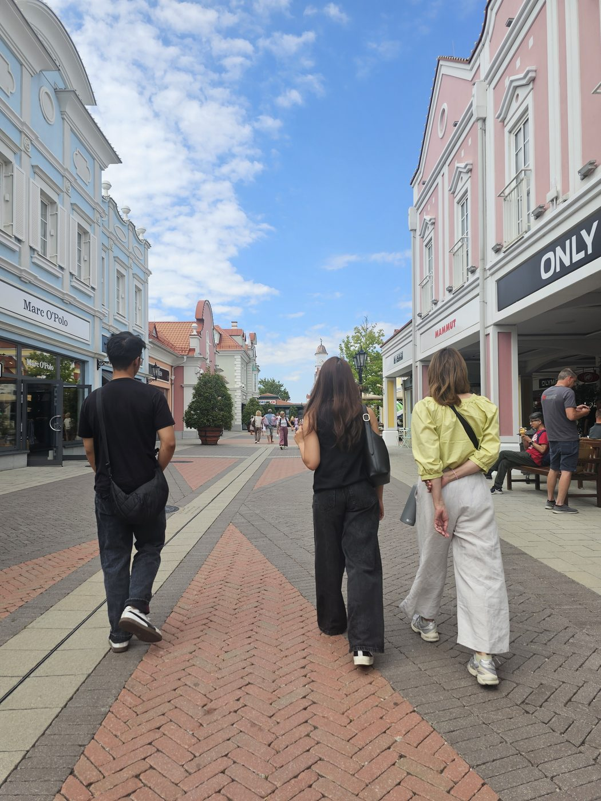
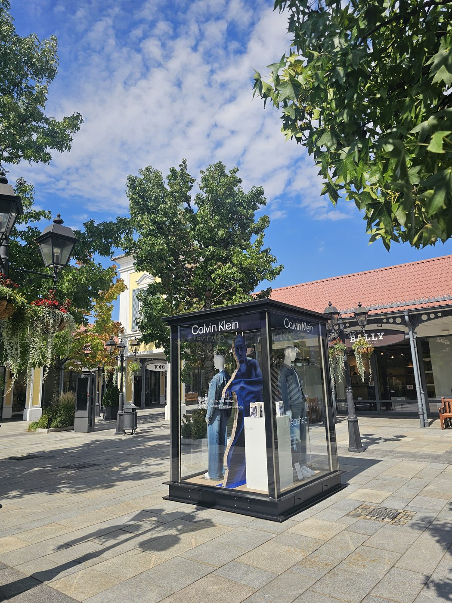
Deretan fasad pastel, pohon peneduh, dan etalase kaca di tengah jalan. Konsepnya memang dibuat seperti kota kecil.
Di papan penunjuk arah tertera denah lengkap dan daftar tokonya — panjang sekali, dari merek olahraga sampai rumah mode besar. Sebaiknya foto papan ini di awal, karena kawasannya lebih luas dari dugaan dan gampang berputar-putar.
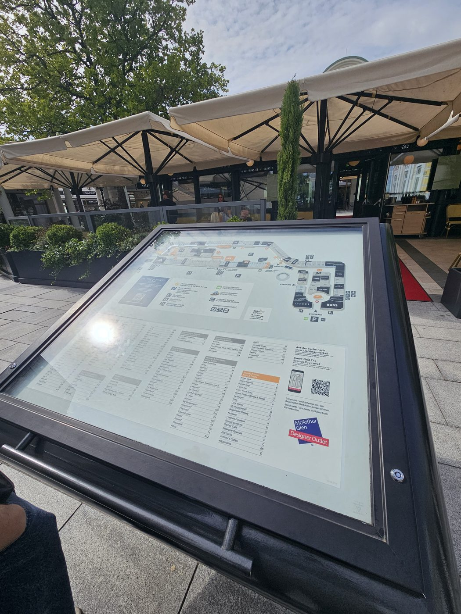
Di salah satu dinding ada papan sejarah operatornya, McArthurGlen, yang menyebut jaringan ini punya 21 pusat di 8 negara. Di garis waktunya, Parndorf tercatat dibuka pada 1998 — jadi tempat ini sudah berdiri hampir tiga dekade, bukan proyek baru.
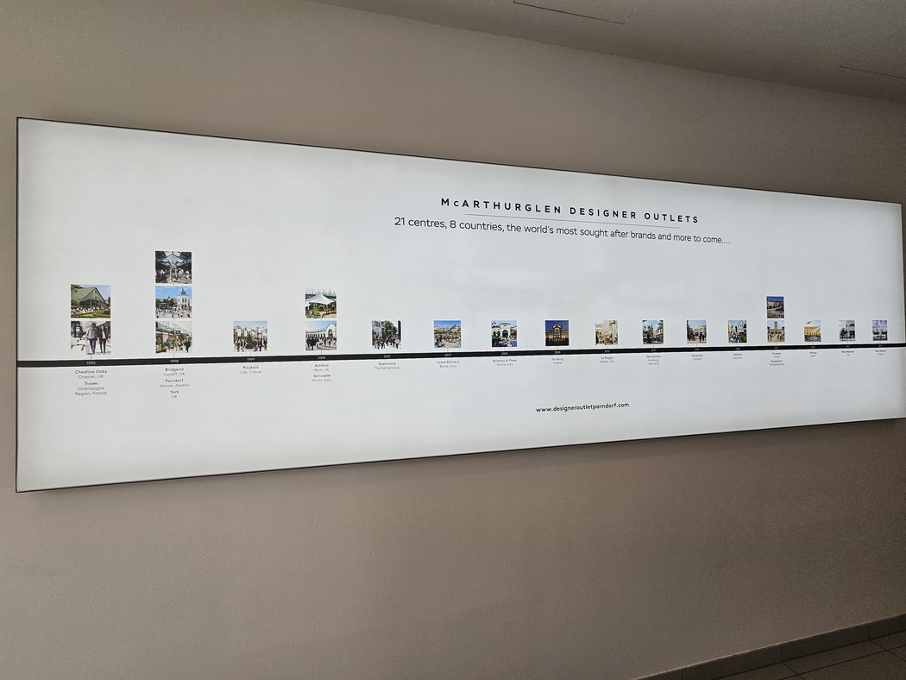
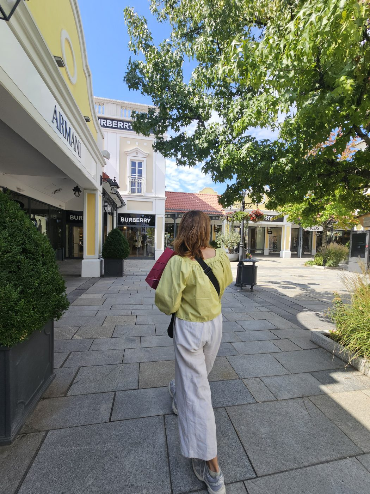
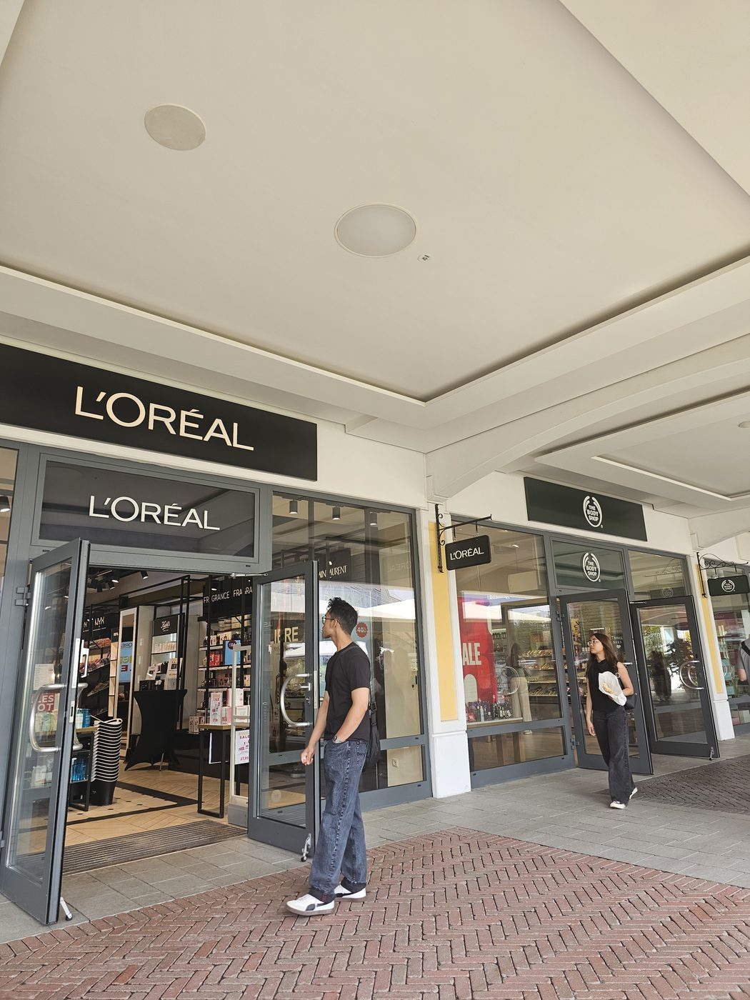
Rumah mode besar dan merek harian berdiri di jalan yang sama — itu justru kekuatan tempat seperti ini.
Bagian yang paling sering terlewat, padahal nilainya besar
Ini bagian terpenting dari seluruh bab ini, dan sayangnya paling sering dilewatkan orang Indonesia yang belanja di Eropa. Sebagai penduduk di luar Uni Eropa, kamu berhak menarik kembali PPN (VAT) yang sudah dibayar di dalam harga barang. Di Austria tarif PPN standarnya 20 persen.
Urutannya begini:
1. Di toko — minta tax free form saat membayar. Nama dan alamat luar negeri harus diisi, dan struk aslinya harus menempel pada formulir itu. Simpan semuanya dalam satu amplop, jangan tercecer.
2. Saat meninggalkan Uni Eropa — barang dan formulirnya ditunjukkan ke bea cukai di titik keluar terakhir dari wilayah Uni Eropa, untuk mendapat stempel atau kode QR validasi. Di Bandara Wina ada konter eValidation untuk ini. Tanpa stempel itu, uangnya tidak akan cair — sebesar apa pun belanjanya.
3. Pencairan — bisa lewat konter refund di bandara, atau dikirim ke kartu kredit.
Satu hal yang perlu disiapkan mentalnya: yang kembali bukan 20 persen penuh. Perusahaan jasa refund memotong biaya, ditambah biaya kurs atau pemrosesan kartu, sehingga yang benar-benar diterima biasanya di kisaran 15 persen dari harga beli. Tetap lumayan — untuk belanja €1.000 itu sekitar €150, dan barangnya toh tetap dibeli.
Catatan penting soal rute kami: stempel harus diambil di titik keluar terakhir dari Uni Eropa, bukan di negara tempat membeli. Karena setelah Austria kami masih lanjut ke Inggris, urusan stempel ini tidak bisa diselesaikan sembarangan di perjalanan — harus direncanakan sesuai titik keluarnya.
Kompromi paling gampang untuk rombongan
Urusan perut diselesaikan di wagamama, jaringan restoran Asia yang memang punya gerai di kawasan ini. Menunya edisi spring/summer 2026, dan yang jadi bintangnya di halaman depan: coconut curry udon — udon tebal dalam kuah kari kelapa. Buat kami ini kompromi yang gampang: masih terasa Asia, tapi tidak perlu mencari-cari restoran khusus di tengah kawasan belanja.
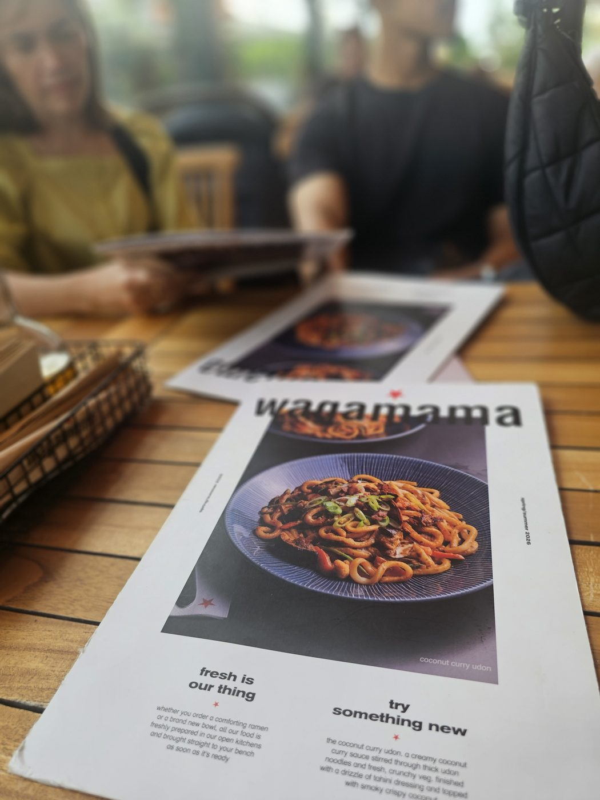
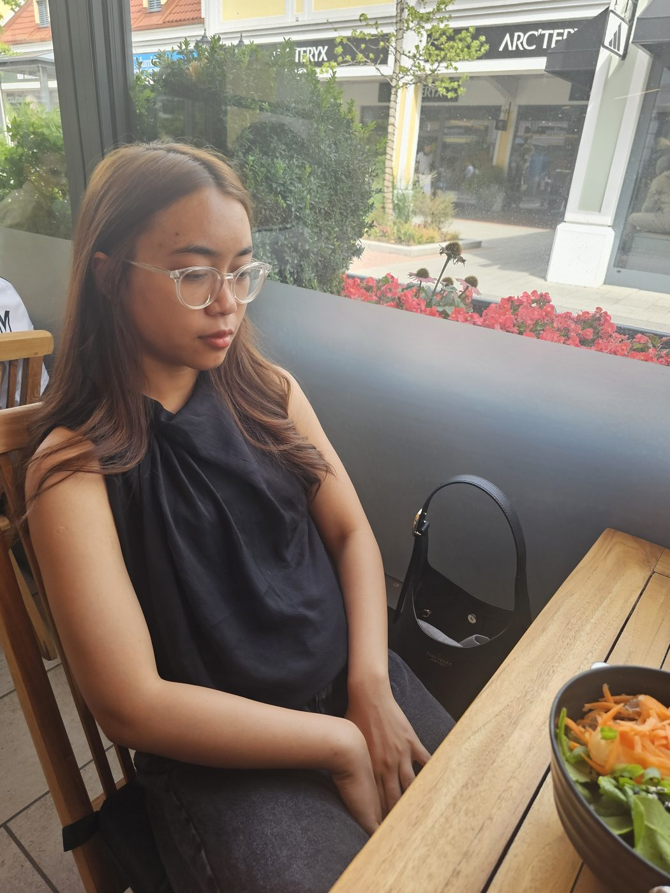
Kiri: menu musim panas 2026. Kanan: makan di meja luar, dengan etalase toko sebagai pemandangan.
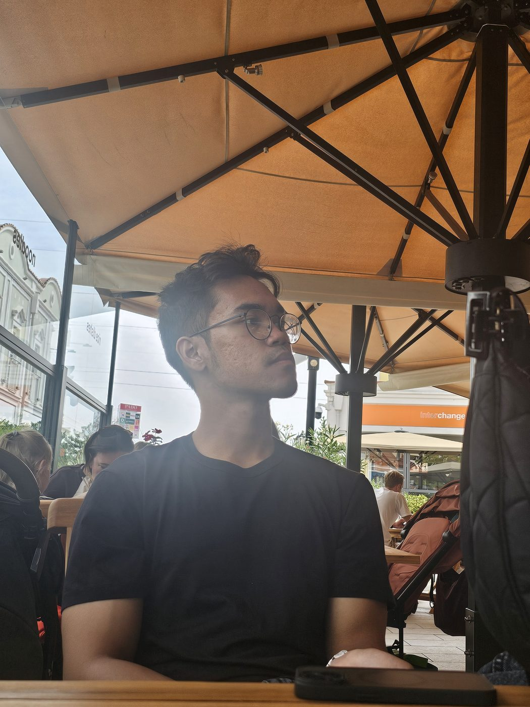
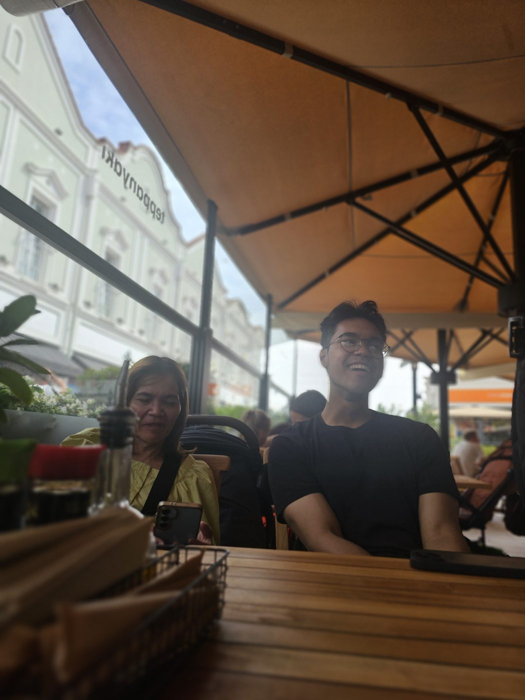
Payung oranye, meja kayu, dan jeda duduk yang sangat dibutuhkan setelah berjalan dari ujung ke ujung.
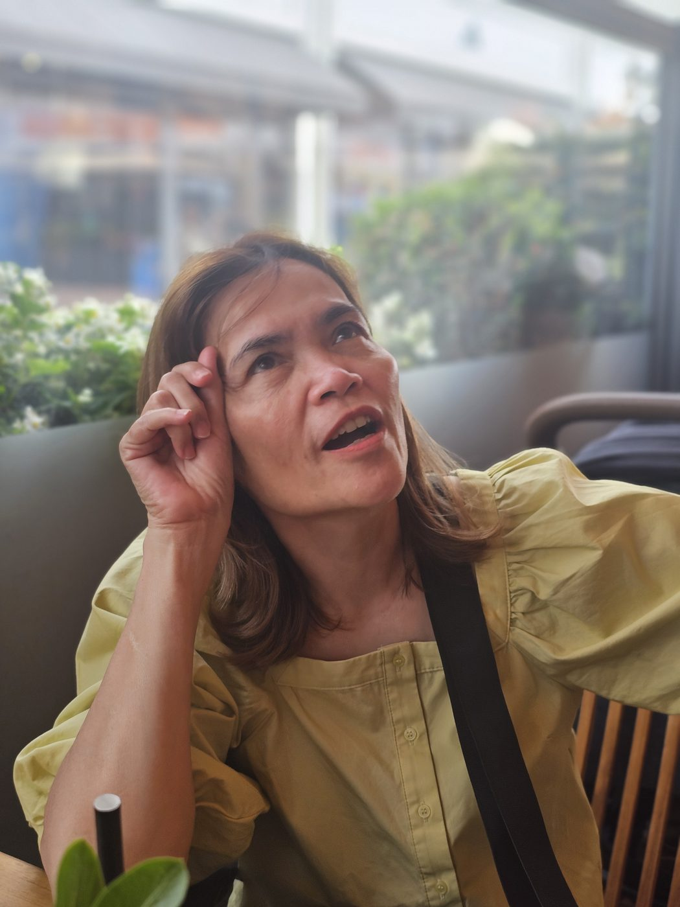
Pretzel dorong dan es krim serba merah muda
Di antara toko-toko ada gerobak kecil berwarna putih-emas bertuliskan Pretzels Paradise — pretzel gourmet, handmade in Austria, dijajakan bersama limun alami. Pretzel memang jajanan jalanan klasik kawasan berbahasa Jerman, dan melihatnya dijual dari gerobak dorong di antara butik mewah terasa lucu sendiri.
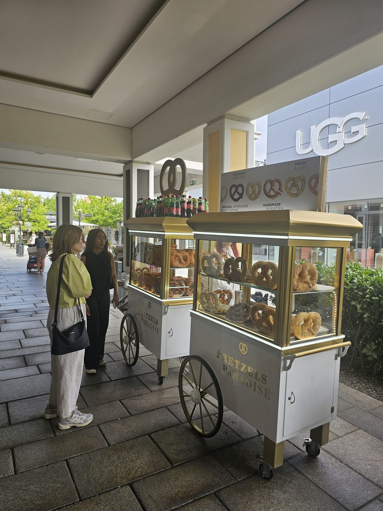
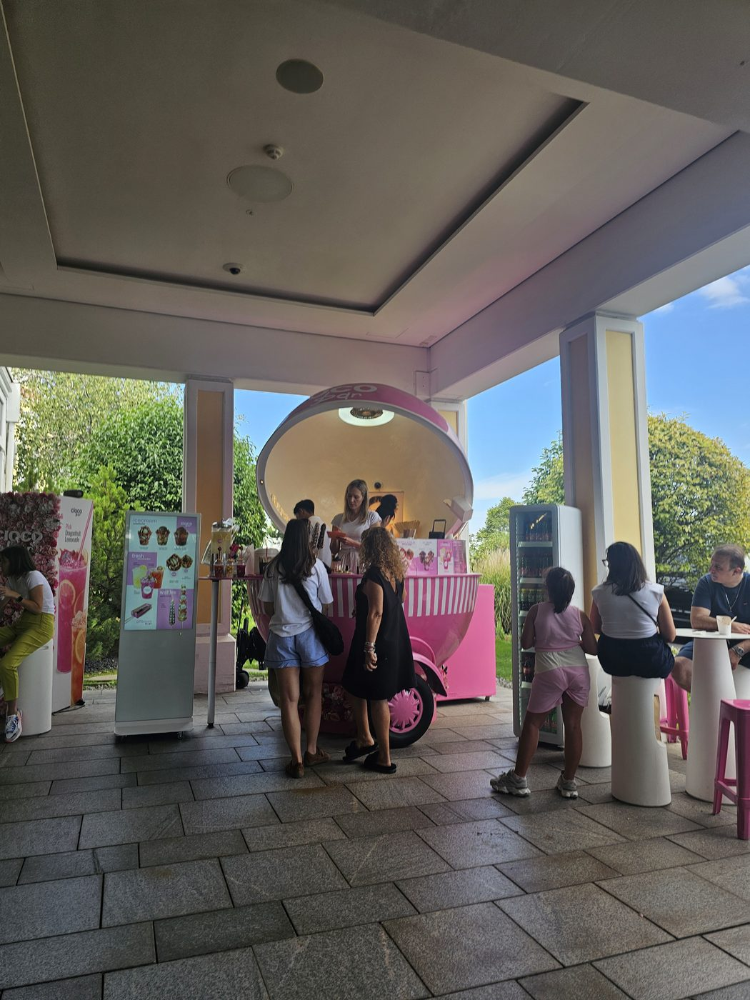
Kiri: pretzel buatan tangan dari gerobak dorong. Kanan: kios es krim dengan mobil mini merah muda sebagai pajangan — antreannya panjang.
Dari ladang Burgenland ke lembah Alpen
Keluar dari Parndorf sore hari, mobil mengarah ke barat daya. Pemandangannya berubah pelan-pelan: dataran datar Burgenland berganti perbukitan, perbukitan berganti lereng berhutan, dan lambat laun jalanan mulai diapit dinding gunung di kedua sisi. Kami masuk A9 Pyhrn Autobahn — jalur utara-selatan sepanjang sekitar 230 kilometer yang membelah pegunungan Austria.
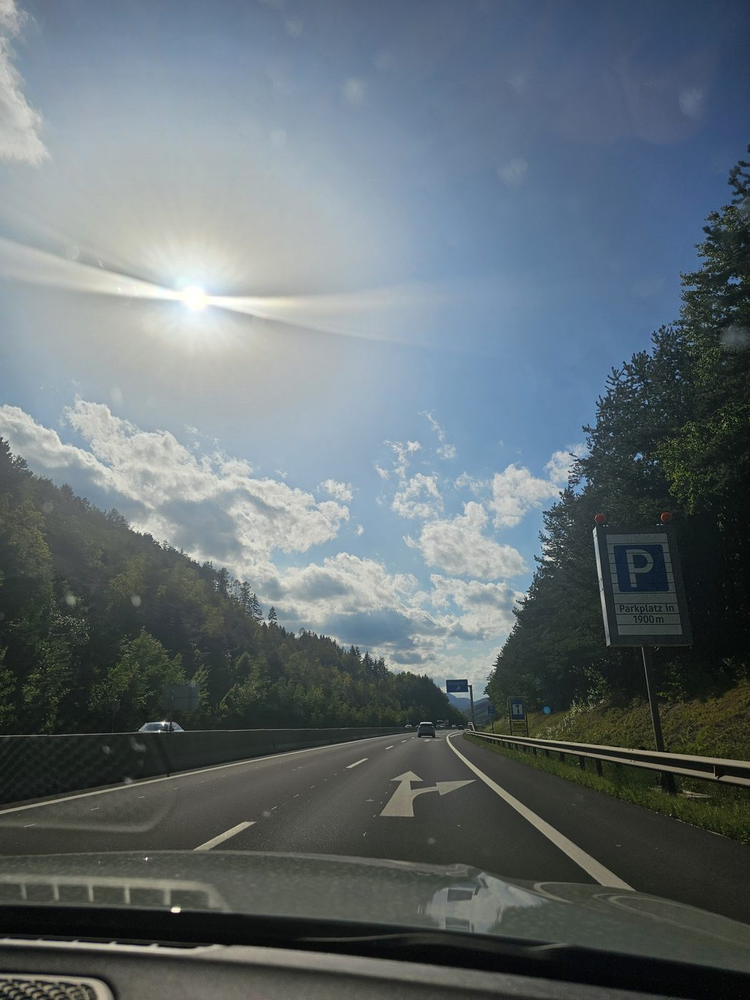
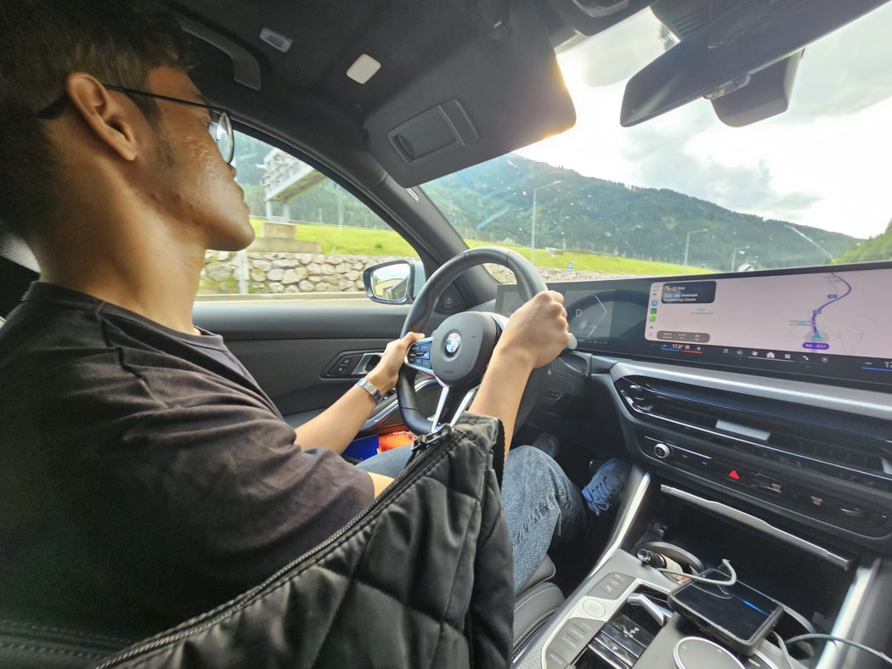
Kiri: matahari sore rendah dan menyilaukan di jalur barat, papan biru menunjuk tempat istirahat 1.900 meter lagi. Kanan: layar navigasi mulai menyebut nama-nama kota pegunungan — Radstadt, Schladming, Liezen.
Dan kenapa hampir semuanya sedang dikerjakan
Bagian ini yang paling berkesan dari perjalanan sore itu. Begitu masuk kawasan pegunungan, jalan tol berhenti berkelok mengikuti lembah dan mulai menembus gunung. Terowongan datang beruntun — keluar dari satu, beberapa menit kemudian sudah masuk yang berikutnya. Ini konsekuensi geografi: Austria adalah negara Alpen, dan menembus batu sering kali lebih masuk akal daripada memutari lereng.
Yang tidak kami duga adalah betapa banyaknya pekerjaan konstruksi di dalamnya.
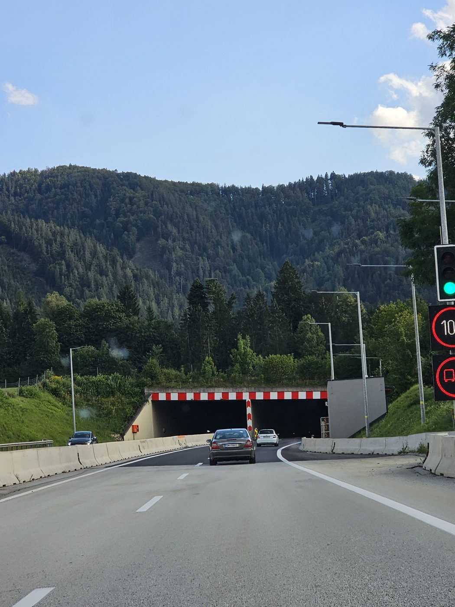
Di beberapa terowongan, satu tabung ditutup total dan seluruh lalu lintas dua arah dialihkan ke satu tabung yang tersisa. Artinya: di dalam terowongan sempit, kendaraan dari arah berlawanan lewat persis di sebelah kita, cuma dipisahkan garis cat dan deretan lampu oranye. Truk besar berpapasan dalam jarak sangat dekat. Tidak ada bahu jalan, tidak ada ruang untuk keliru.
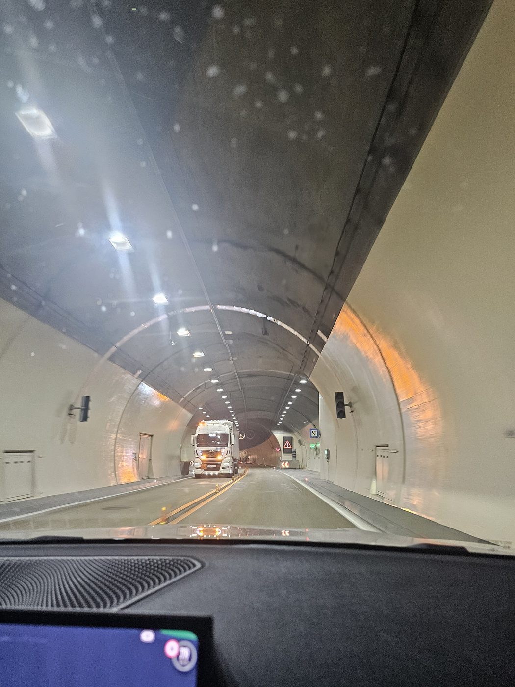
Ada alasannya, dan alasannya serius. Banyak terowongan tol lama di Austria memang dibangun hanya satu tabung untuk dua arah. Setelah rangkaian kebakaran terowongan besar di Pegunungan Alpen pada akhir 1990-an, Uni Eropa mengeluarkan peraturan keselamatan terowongan dengan standar yang jauh lebih ketat. Sejak itu ASFINAG, pengelola jalan tol Austria, menggelontorkan sekitar €1,5 miliar untuk memodernisasi sistem terowongannya.
Di A9 sendiri ada tiga sistem terowongan yang dulunya satu tabung dua arah — rangkaian terowongan Klaus, lalu Bosruck dan Gleinalm — dan semuanya masuk program penambahan tabung kedua. Rangkaian Klaus sudah selesai lebih dulu: empat tabung baru dibuka untuk lalu lintas pada 2017, sementara empat tabung lama direnovasi menyeluruh. Sisanya menyusul bertahap, dan itulah yang kami lewati sore itu.
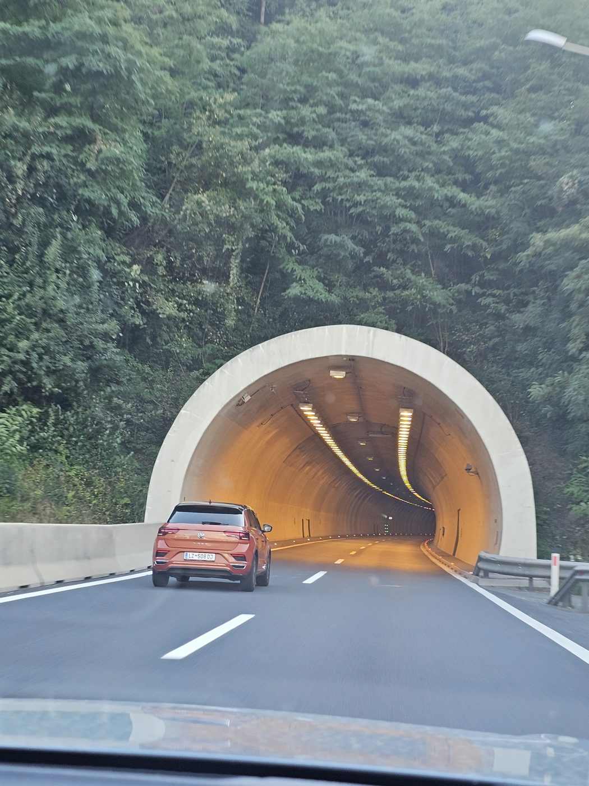
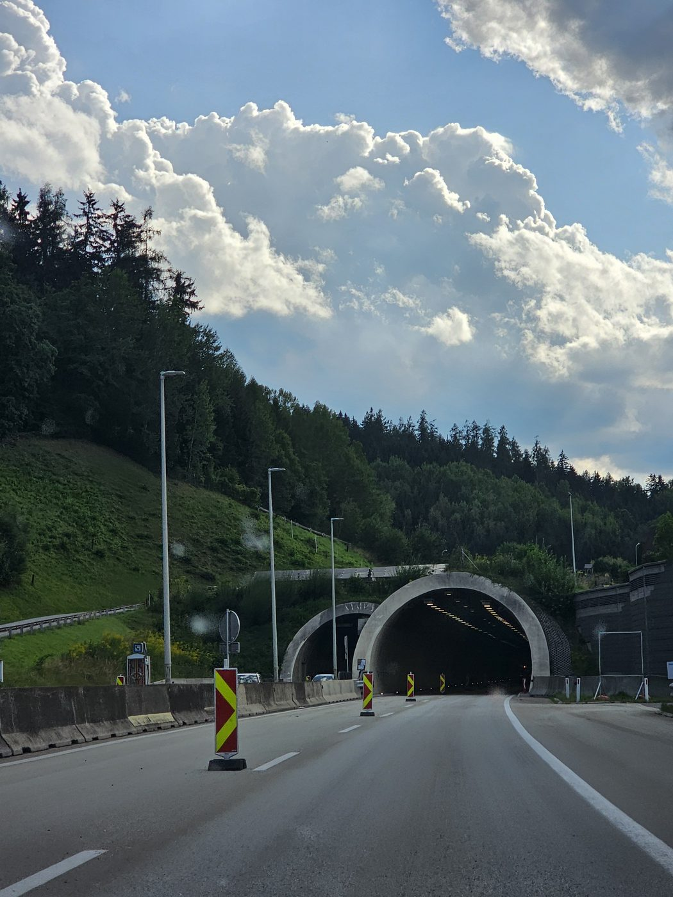
Kanan: dua tabung bersebelahan — satu dibuka, satu ditutup untuk dikerjakan. Rambu chevron merah-kuning menandai belokan mendadak masuk jalur yang dialihkan.
Tempat istirahat dengan pemandangan yang keterlaluan bagusnya
Setelah beberapa terowongan berturut-turut, kami berhenti di Rastplatz Gaishorn — tempat istirahat ASFINAG di A9, di wilayah Gaishorn am See, Steiermark. Di dinding kayunya tertulis besar-besar: "Gute Fahrt, Österreich!" — selamat jalan, Austria.
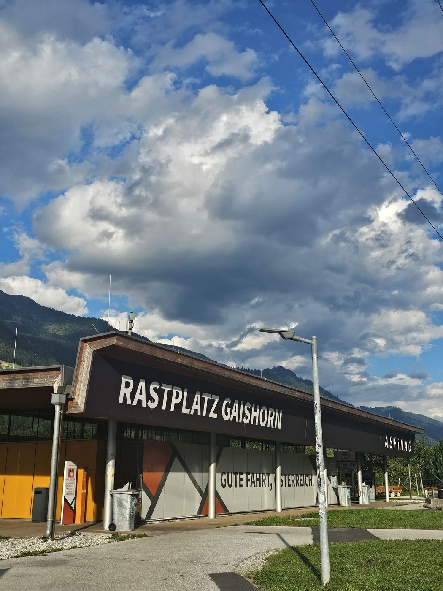
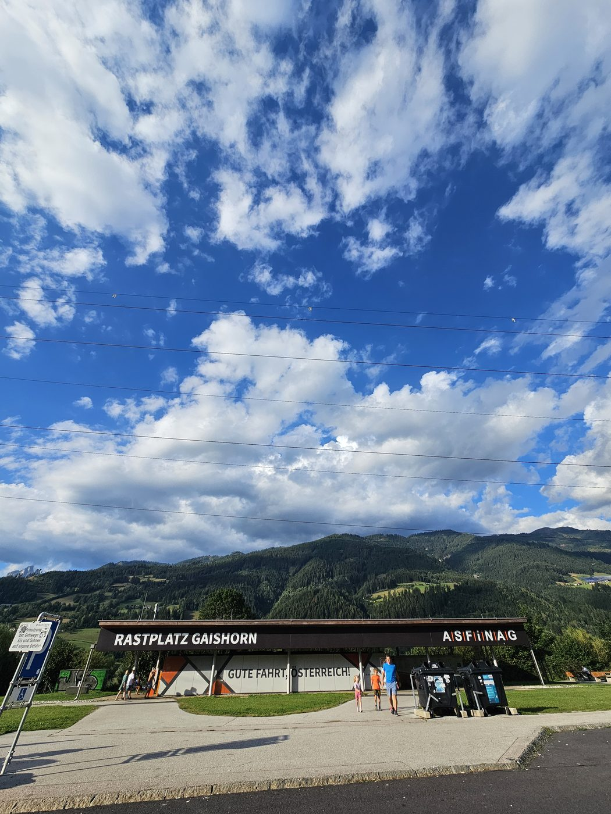
Bukan rest area biasa: dindingnya kayu, latarnya barisan gunung, dan ada jalur setapak menembus padang rumput ke arah danau.
Ini rest area yang membuat kami berhenti lebih lama dari rencana. Bukan karena fasilitasnya — meski lengkap — tapi karena begitu keluar dari mobil, yang terbentang di sekeliling adalah padang rumput hijau, barisan cemara, dan dinding gunung di segala arah. Setelah seharian di antara etalase toko, perbedaannya terasa tajam sekali.
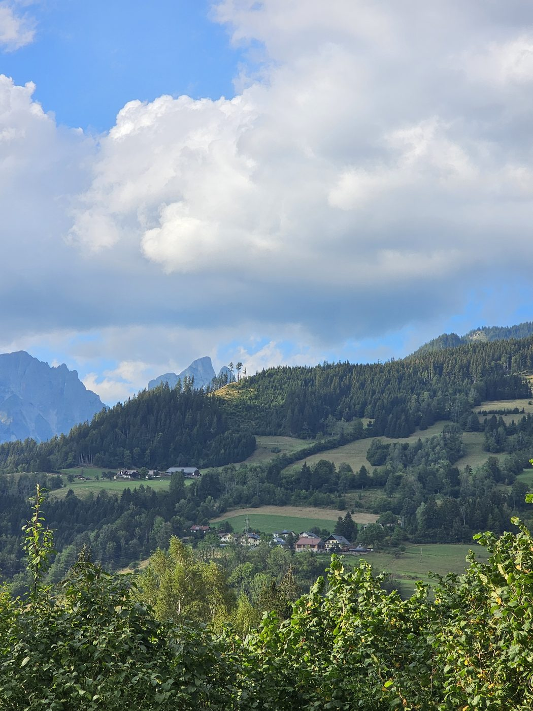
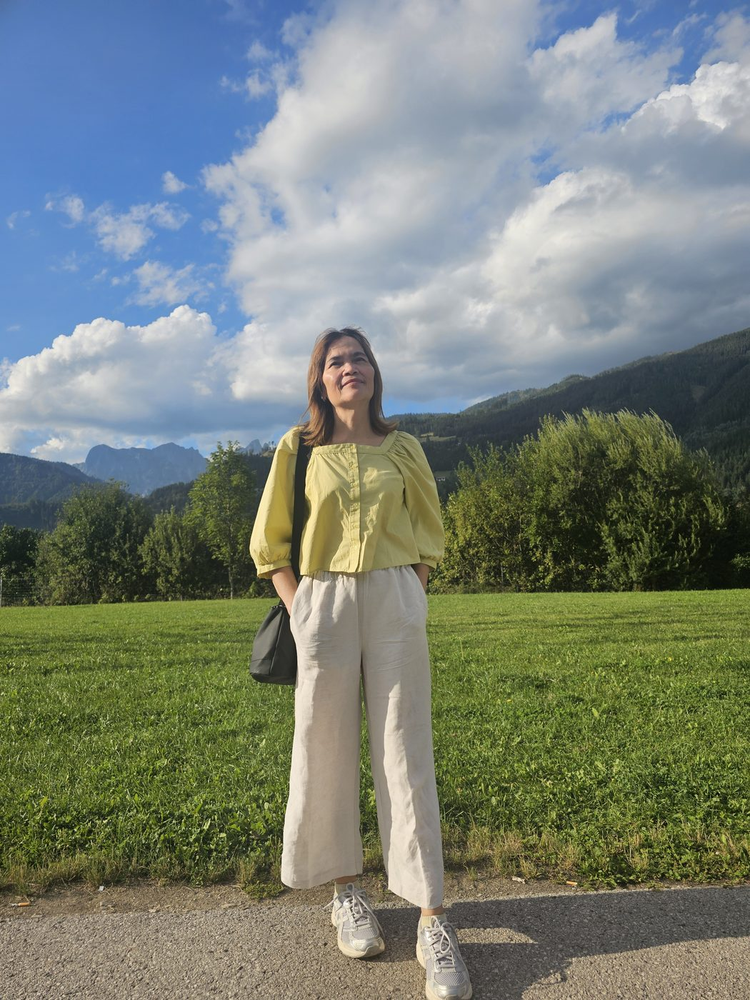
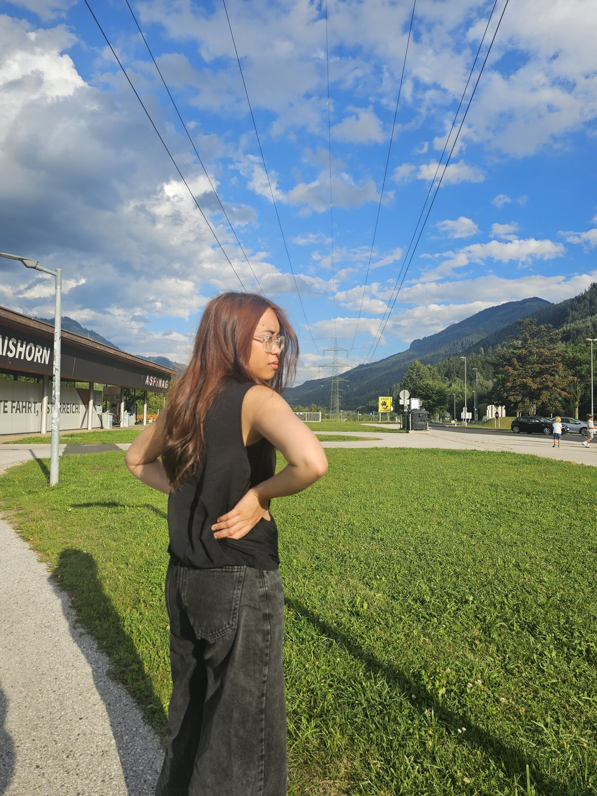
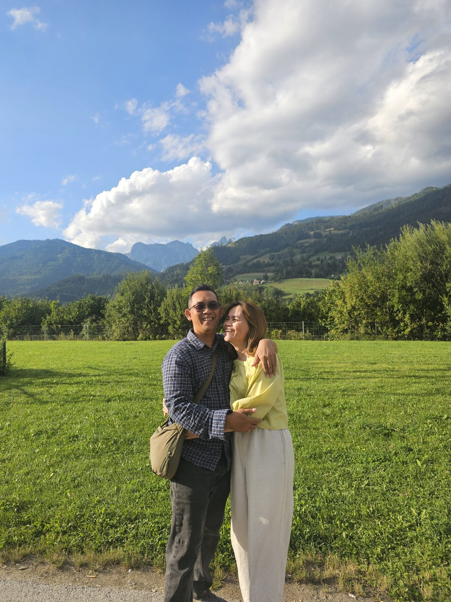
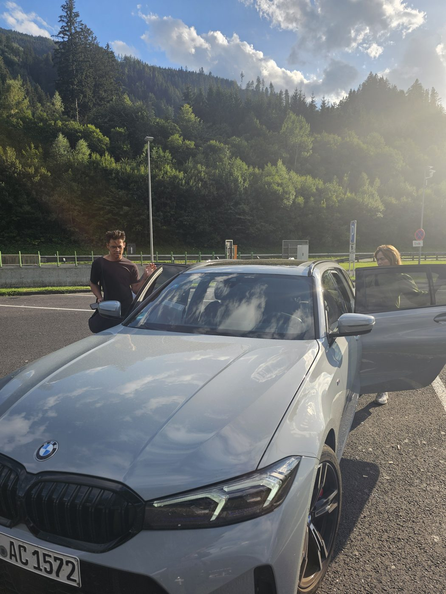
Berhenti sepuluh menit yang berubah jadi setengah jam. Tempat istirahat dengan latar seperti ini tidak pantas dilewati buru-buru.
Pizza di teras kayu, saat langit mulai gelap
Sisa perjalanan dihabiskan menyusuri lembah, dengan jalan yang makin sempit dan gunung yang makin dekat. Begitu sampai dan barang diturunkan, urusan berikutnya jelas: cari makan. Pilihannya jatuh ke sebuah restoran pizzeria berbangunan kayu putih khas pegunungan, lengkap dengan papan Kegelbahn — lintasan boling gaya Austria — di depannya.
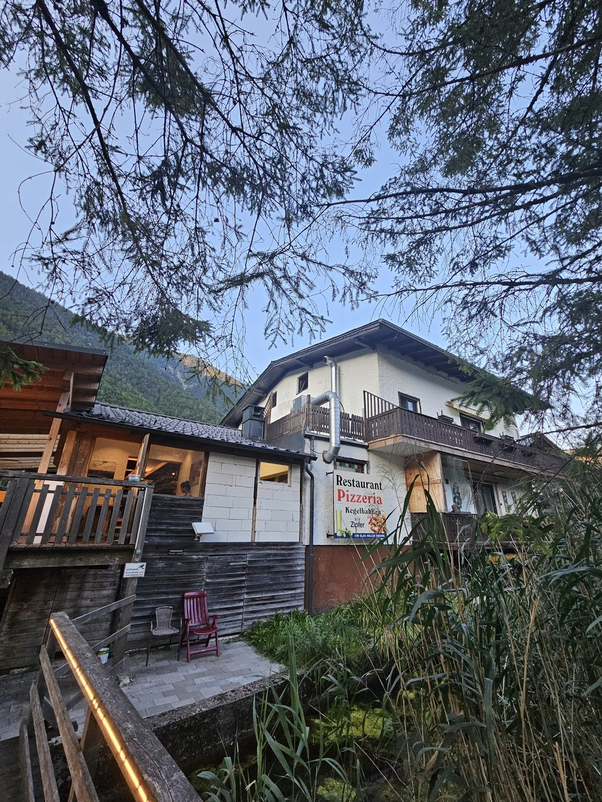
Duduk di teras kayu terbuka dengan bangku panjang, ditemani Zipfer — bir Austria yang di sini seperti minuman standar setiap meja. Udara sudah dingin, dan itu justru bagian yang menyenangkan setelah beberapa hari terakhir di kota.
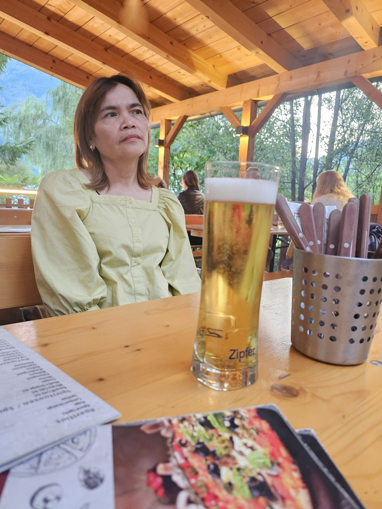
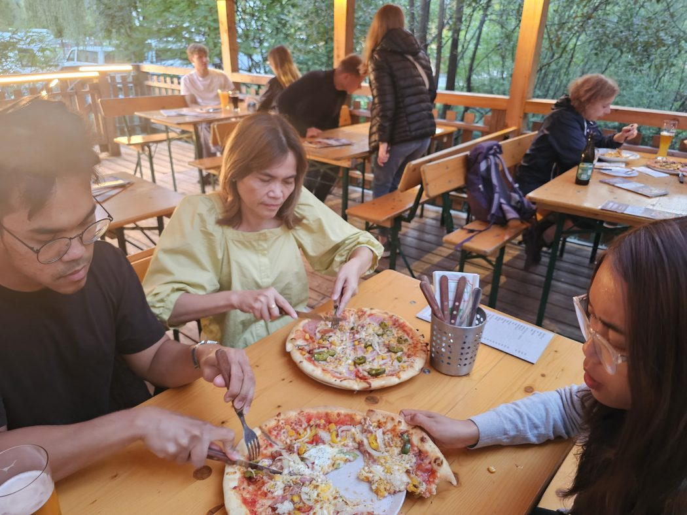
Pizza tipis, dipotong sendiri pakai pisau dan garpu — dan meja panjang bergaya rumah bir, jadi duduknya berbagi ruang dengan tamu lain.
Hari ketujuh ditutup begitu saja: dimulai dari etalase merek mewah di dataran timur, berakhir di teras kayu di kaki gunung dengan sepotong pizza. Jarak yang ditempuh hari itu sekitar 350 kilometer, dan perpindahan suasananya jauh lebih besar dari angka itu.